We analyzed guest sentiment (1-7 scale from OnTheSnow) on four resort attributes. Those being snow making acreage, the number of days open, number of runs, and average natural snowfall across U.S. resorts (OnTheSnow.com, 2019 season). This report tested region as a predictor. Detailed in the report, it was dropped, as it provided no significance to the model. In turn, the model was ran and determined the number of runs, with 95% confidence holding all other variables constant, increases +0.003 to +0.007 sentiment points per run. The amount of days open per season is smaller and less certain, with 0 to 0.005 pts increase per day, and snow making is the weakest, but still significant. Snow making efforts deliver, with 95% confidence holding all other variables equal, 0 to +0.002 points increase per 1% increase coverage. This analysis determines that capital is better spent on terrain than snow making, and that snow making efforts should only be invested in when supporting terrain growth.
Plan
Business Objective
64% of weather stations report declining snow totals, 1970-2023. Utah’s 15 major resorts saw a 26.5% skier-day decline in 2024-25. Natural snowfall is uncontrollable to the resort. Controllable levers predicted are runs, days open, and snowmaking investment.
The business question: among the controllable attributes, which most improves the customer sentiment, and by how much? This ranks where a competitive dollar is best spent.
Ideal Data
The ideal dataset for this question would be a resort-level panel covering the most recent season. This dataset would cover said resort’s investment in runs, operating days, pass costs, pass prices, and snowmaking in ratio with it’s acerage. It would also include sentiment measured by the resort, given to a random sample that is representative of the population. That would let this analysis separate the causal effect of a resort’s choices from influential factors like brand reputation, price, and the weather itself, and would let the function be expressed in dollars based on sentiment, and guage how the relationship in sentiment increases can directly increase or decrease profits.
Data
Source: OnTheSnow.com scrape, 330 U.S. resorts, 2019 season. https://www.kaggle.com/datasets/sijialai/onthesnow.
The final dataset covers the average snowfall (in), runs (count), days open last year (count), snowmaking coverage (acres), sentiment rating (1-7 scale), state collapsed to 5 regions (East/Midwest/Mountain/West/Other) for group-size viability. n = 240 after dropping rows missing any of the core fields.
The sentiment rating was scraped from OnTheSnow.com in addition to the original Kaggle dataset.
Resort attributes after cleaning (n = 240)
Variable
Mean
Std. dev.
Min
Max
Snow making (acres)
188.8
277.8
2
3,379
Days open last year
115.8
33.1
3
243
Runs
52.9
50.2
3
341
Average snowfall (in.)
174.1
128.7
18
669
Sentiment (1-7)
3.97
0.61
2.5
5.5
Ideal data vs. real data: Compared to the ideal dataset described above, this dataset falls short in a couple of ways. First, it is data gathered from the 2019 season rather than as recent as possible, 2025-26. Second, we have no cost or pricing data, so we can rank attributes by their association with sentiment but cannot yet compute a true return on investment.
Predictors & Outcome
Outcome. Sentiment: OnTheSnow’s aggregated customer sentiment rating for the resort, on a 1-7 scale (7 = most positive). This is a derived measure of guest satisfaction rather than a direct survey.
Predictors.
snow_making: acres of terrain covered by artificial snowmaking equipment.
days_open_last: number of days the resort operated last season.
runs: number of named runs/trails at the resort.
avgsnow: average natural snowfall (inches).
region: East, Midwest, Mountain, West, or Other, derived from the resort’s state. Included as a candidate for control, later removed as a predictor as it doesn’t provide clarity or model fit.
Build
Loss function. OLS and a Bayesian linear model both minimize expected squared error on log-sentiment:
Standard for a continuous, roughly symmetric outcome. It is important that this analysis utilzes a function that penalizes large misses since a badly mis-predicted resort yields bad operational advice.
Utility function. Operator allocates budget across controllable levers \(a = (\Delta\text{runs}, \Delta\text{days\_open\_last}, \Delta\text{snow\_making})\) to maximize:
#import librariesimport numpy as npimport matplotlib.pyplot as pltimport pandas as pdimport statsmodels.formula.api as smfimport statsmodels.api as smimport bambi as bmbimport arviz as azimport polars as plfrom pyprojroot.here import herefrom plotnine import*from sklearn.model_selection import train_test_splitfrom sklearn.metrics import mean_squared_error, root_mean_squared_error
g++ not available, if using conda: `conda install gxx`
This module imports the dataset file. The snow_data is the orignial dataset that is used in the analysis.
# read the data file snow_data = pl.read_excel( here('D:\\CoursesUSU\\Final_Semester\\Intro_Reg_ML\\DATA5600\\data-5600\\Project1\\Data-5600-Project-1\\OnTheSnow_v1.xlsx'))
Could not determine dtype for column 34, falling back to string
Could not determine dtype for column 36, falling back to string
The regions are created for each state to combine different states & cities.
#create a region. See visualizations below. snow_data = snow_data.with_columns( pl.when( pl.col("city").is_in(["Utah", "Idaho", "Montana", "Wyoming", "Colorado","New Mexico", "Arizona", "Nevada", "Sierra Nevada","Salt Lake City" ]) ).then(pl.lit("Mountain")) .when( pl.col("city").is_in(["Washington", "Oregon", "Alaska", "Mt. Hood" ]) ).then(pl.lit("West")) .when( pl.col("city").is_in(["Minnesota", "Wisconsin", "Michigan", "Illinois","Indiana", "Ohio", "Iowa", "South Dakota", "Missouri" ]) ).then(pl.lit("Midwest")) .when( pl.col("city").is_in(["New York", "Pennsylvania", "New Jersey", "Connecticut","Massachusetts", "Vermont", "New Hampshire", "Maine","Maryland", "Virginia", "West Virginia","North Carolina" ]) ).then(pl.lit("East")) .otherwise(pl.lit("Other")) .alias("region"))# Count observations by city/state and sortcity_counts = snow_data["city"].value_counts().sort("count")# Create ordered column chart for city/state counts(ggplot(city_counts, aes(x='reorder(city, count)', y='count'))+ geom_col(fill='steelblue')+ coord_flip()+ labs( title='Number of Observations by City/State', subtitle='Distribution Prior to Regional Grouping', x='City / State', y='Count of Observations' ))
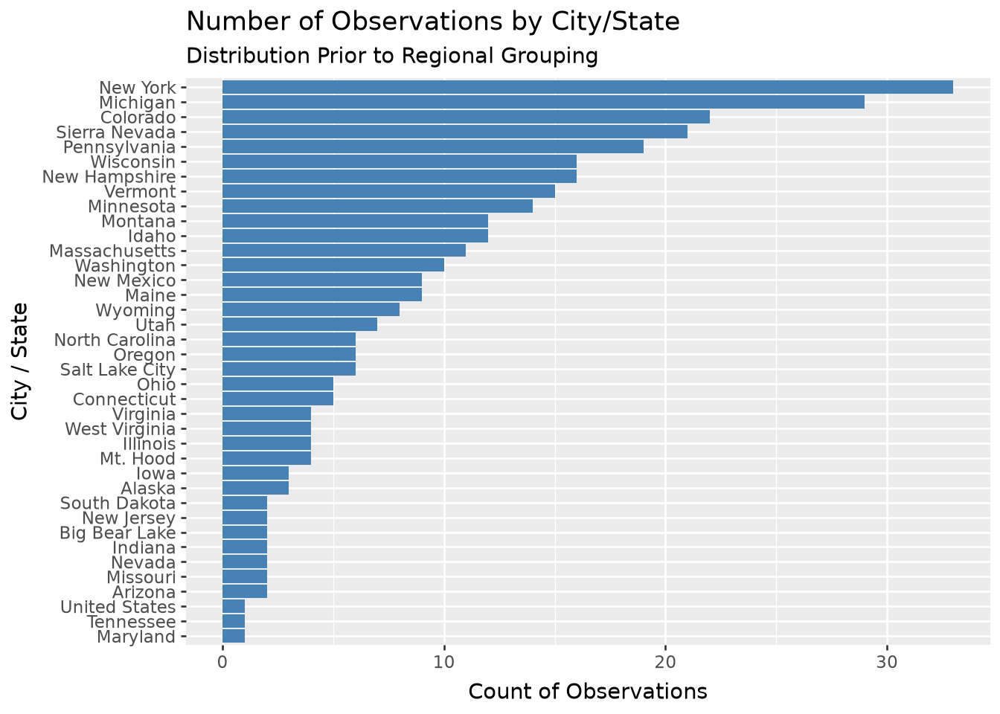
# Count observations by region and sortregion_counts = snow_data["region"].value_counts().sort("count", descending=True)# Create ordered column chart for region counts(ggplot(region_counts, aes(x='reorder(region, -count)', y='count'))+ geom_col(fill='steelblue')+ labs( title='Number of Observations by Region', subtitle='Consolidated Regional Distribution', x='Region', y='Count of Observations' ))
By creating a Region column, we can more accurately measure location, as each section has a greater number of observations to pull from. Having more columns than rows in a dataset can disrupt a linear regression.
#drop city columnsnow_data = snow_data.drop("city")#drop nulls and nanssnow_data = snow_data.drop_nulls(['snow_making','days_open_last','runs','avgsnow','sentiment'])snow_data = snow_data.drop_nans(['snow_making','days_open_last','runs','avgsnow','sentiment'])# see the snow_data dataset cleaned data and count the region entries snow_data.head()snow_data["region"].value_counts().sort("count")
shape: (5, 2)
region
count
str
u32
"Other"
2
"West"
8
"Midwest"
63
"Mountain"
72
"East"
95
Exploring data with visualizations
This section demonstrates exploring data and understanding its limitations. This section verifies our baseline assumption that outcome of sentiment depends upon selected predictors.
#Create visualizations for snowmaking vs sentimentfrom plotnine import geom_smoothfrom plotnine import geom_point(ggplot(snow_data, aes(x='sentiment', y='avgsnow'))+geom_jitter(alpha=0.25, width =0.2, height =0)+ geom_smooth(method='lowess', color ='red')+ labs( title='Sentiment vs Average Snowfall', subtitle='Association with Predictor', x='Sentiment', y='Average Snowfall' ))
d:\CoursesUSU\Final_Semester\Intro_Reg_ML\DATA5600\data-5600\Project1\Data-5600-Project-1\.venv\Lib\site-packages\plotnine\stats\smoothers.py:342: PlotnineWarning: Confidence intervals are not yet implemented for lowess smoothings.
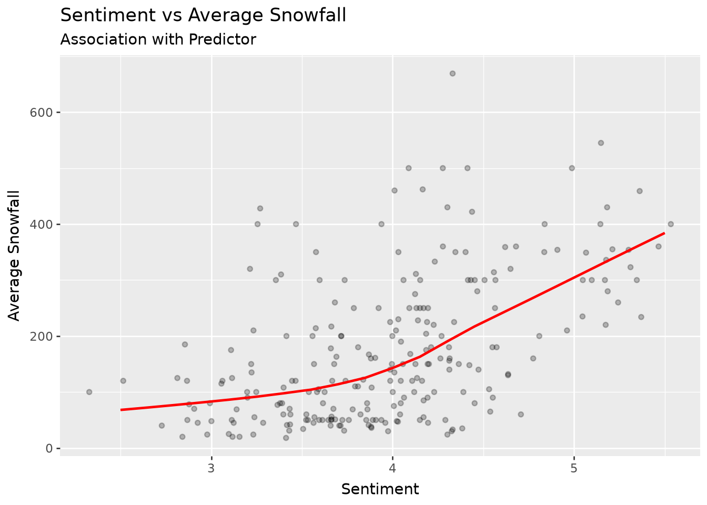
# Create visualizations for Snow Making vs sentiment , y axis is adjusted to take few outliers to see clear graph from plotnine import coord_cartesianfrom plotnine import theme_minimal(ggplot(snow_data, aes(x='sentiment', y='snow_making'))+geom_jitter(alpha=0.25, width =0.2, height =0)+ geom_smooth(method='lowess', color ='red')+ labs( title='Sentiment vs Snow Making', subtitle='Association with Predictor', x='Sentiment', y='Snow Making' )+ coord_cartesian(ylim=(0,1000)))
d:\CoursesUSU\Final_Semester\Intro_Reg_ML\DATA5600\data-5600\Project1\Data-5600-Project-1\.venv\Lib\site-packages\plotnine\stats\smoothers.py:342: PlotnineWarning: Confidence intervals are not yet implemented for lowess smoothings.
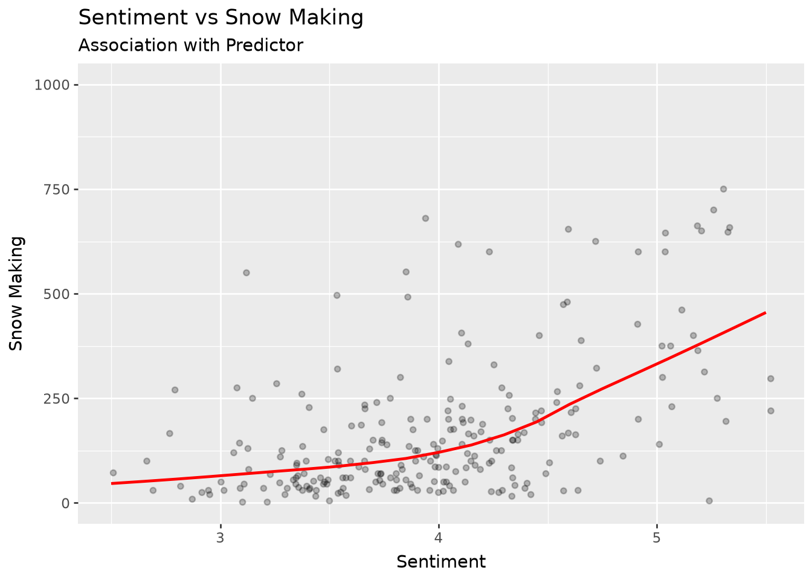
#create visualization for days open last year vs sentiment (ggplot(snow_data, aes(x='sentiment', y='days_open_last'))+geom_jitter(alpha=0.25, width =0.2, height =0)+ geom_smooth(method='lowess', color ='red')+ labs( title='Sentiment vs Days Open Last Year', subtitle='Association with Predictor', x='Sentiment', y='Days Open Last Year' ))
d:\CoursesUSU\Final_Semester\Intro_Reg_ML\DATA5600\data-5600\Project1\Data-5600-Project-1\.venv\Lib\site-packages\plotnine\stats\smoothers.py:342: PlotnineWarning: Confidence intervals are not yet implemented for lowess smoothings.
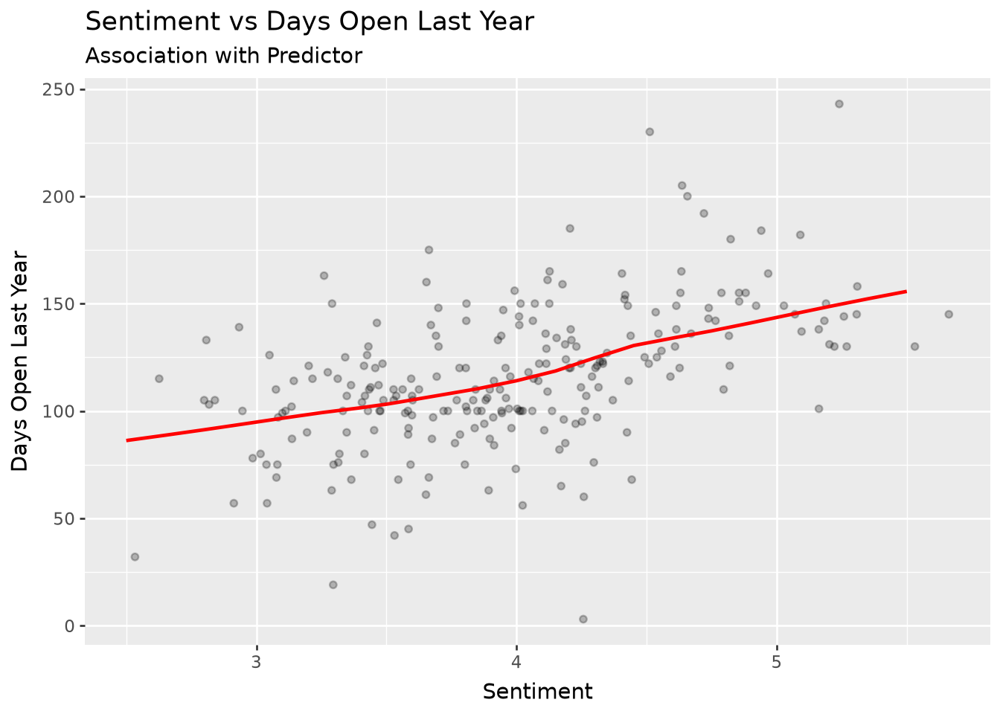
#visualization for sentiment vs runs (ggplot(snow_data, aes(x='sentiment', y='runs'))+geom_jitter(alpha=0.25, width =0.2, height =0)+ geom_smooth(method='lowess', color ='red')+ labs( title='Sentiment vs Runs', subtitle='Association with Predictor', x='Sentiment', y='Runs' ))
d:\CoursesUSU\Final_Semester\Intro_Reg_ML\DATA5600\data-5600\Project1\Data-5600-Project-1\.venv\Lib\site-packages\plotnine\stats\smoothers.py:342: PlotnineWarning: Confidence intervals are not yet implemented for lowess smoothings.
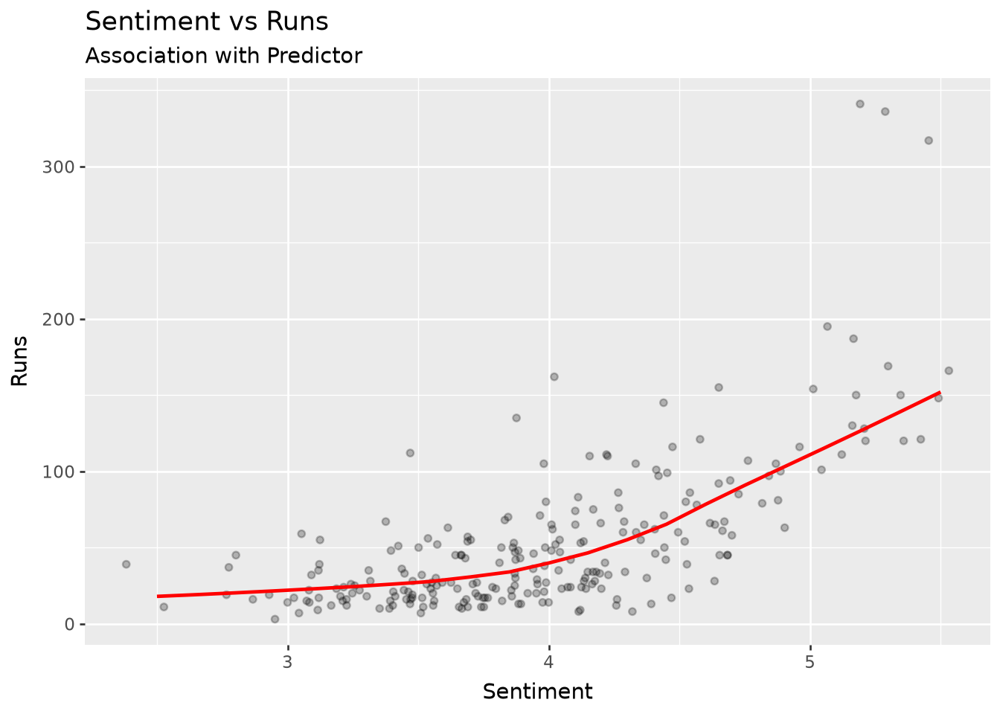
Our underlying assumption that sentiment is related to predictors is validated after observing these charts. Although, this is not an accurate way to analyse corresponding affects of predictors on output,however it verifies our underlying assumption of the business problem that sentiment depends upon snow making, average snow fall, runs and number of days open last year.
Fit
The first model fitting is done in this section of the report. East region has been dropped as it had the most number of ski resorts. Hence, east region is taken as a baseline reference for our model. We have fitted ordinary least squares model to fit with out predictors. The residuals and fitted values are saved to our data frame under observations. We are trying to run predictions on our model later to compare different models in our dataset.
The model fitted is OLS and residuals are collected for the assumption verfications in the next block. Predictors are dummy coded so that the eastern region can be dropped as it has the most number of ski resorts and will be used as a baseline in our model. Later the model comparison will be done with and without regions.
A new variable snow train is defined and the analysis for the model is initiated. The output is sentiment and input predictors are all regions except east region, snow making, days open last year, number of runs, and average snow fall per season. We add 1 to the equation not to have 0 values inside the model to avoid log(0) scenarios in the calculation. Snow train stores all the residuals and fitted values of our model and later will be used for assumptions verification.
# Dummy code discrete predictors- used east as reference case becuase it has the most entriessnow_train = (snow_data.to_dummies(columns = ['region'], drop_first =False).select(pl.exclude('region_East')))# fit a modelfit_01 = smf.ols("sentiment ~ 1 + snow_making + days_open_last + runs + avgsnow + region_Midwest + region_Mountain + region_Other + region_West", data = snow_train).fit()#save residualssnow_train = (snow_train .with_columns(residuals_01 = pl.Series(fit_01.resid)) .with_columns(fitted_values_01 = pl.Series(fit_01.fittedvalues)) .with_row_index('observation'))
The snow_train data is observed and a new column observation is added into the dataframe. It houses all 240 observations on our data including our predictors, residuals and fitted values. This data will be used for our initial assessment of the model including the assumption verifications.
# observe the snow train data with observation index and all residuals and fitted values snow_train
shape: (240, 12)
observation
snow_making
days_open_last
runs
avgsnow
sentiment
region_Midwest
region_Mountain
region_Other
region_West
residuals_01
fitted_values_01
u32
i64
i64
i64
i64
f64
u8
u8
u8
u8
f64
f64
0
113
150
76
669
4.15
0
0
0
1
-0.342761
4.492761
1
60
45
36
350
3.55
0
0
0
1
-0.15742
3.70742
2
30
150
13
69
3.85
0
0
0
1
0.176589
3.673411
3
104
122
55
260
3.55
0
1
0
0
-0.503084
4.053084
4
80
115
65
250
4.0
0
1
0
0
-0.075948
4.075948
…
…
…
…
…
…
…
…
…
…
…
…
235
32
121
28
80
3.4
0
1
0
0
-0.353553
3.753553
236
195
130
130
459
5.35
0
1
0
0
0.696609
4.653391
237
18
61
48
310
3.55
0
1
0
0
-0.309871
3.859871
238
250
121
32
300
3.25
0
1
0
0
-0.72505
3.97505
239
30
131
33
250
4.0
0
1
0
0
0.058291
3.941709
Reconcile
To reconcile, all the assumptions have been verified to fit to the model to have accurate analysis. The details for each verified assumption is provided below.
Satifying the assumptions
As observed in our chart, the linearity assumption has been fullfilled by comparing the residuals and the fitted values in our model. A linear visual for our data verifying assumption.
LINEARITY:
# run to check for linearity assumption is fullfilled (ggplot( snow_train, aes( x ='residuals_01', y ='fitted_values_01' ) )+ geom_point(alpha =0.25)+ geom_smooth( method ='lowess', color ='red' )+ labs( title ='Linearity: Residuals vs. Fitted Values', subtitle ='Look for a roughly horizontal line' ))
d:\CoursesUSU\Final_Semester\Intro_Reg_ML\DATA5600\data-5600\Project1\Data-5600-Project-1\.venv\Lib\site-packages\plotnine\stats\smoothers.py:342: PlotnineWarning: Confidence intervals are not yet implemented for lowess smoothings.
Independence assumption has been verified in the data as there is no visible trend in the residuals vs obseration plot. All the points are randomly distributed for our data and there is no visible trend.
INDEPENDENCE:
(ggplot( snow_train, aes(x ='observation', y ='residuals_01') )+ geom_line(alpha =0.5)+ geom_hline(yintercept =0, color ='red')+ labs( title ='Independence: Sequential Residuals', subtitle ='Look for a trend in mean or variance' ))
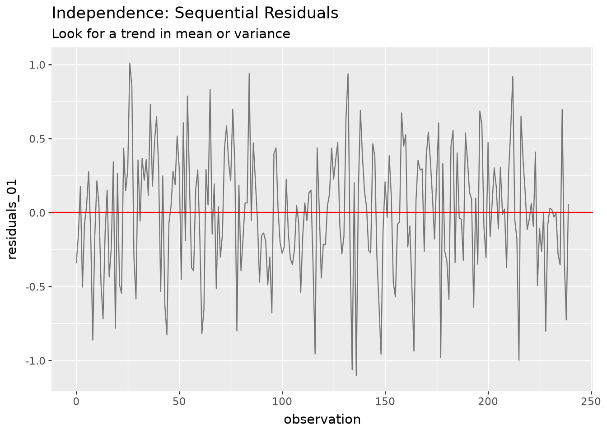
The data points for fitted vs residuals are not in a funnel shape; which suggests that the constant variance assumption has been satisfied.
CONSTANT VARIANCE:
(ggplot( snow_train, aes( x ='residuals_01', y ='fitted_values_01' ) )+ geom_point(alpha =0.25, color ='red')+ labs( title ='Constant Variance: Residuals vs. Fitted Values', subtitle ='Look for a funnel shape in the residuals' ))
Normality assumption has been fullfilled as the error is normally distributed and follows the line in the Q-Q plot.
NORMALITY:
(ggplot( snow_train, aes(sample ='residuals_01') )+ stat_qq(alpha =0.25)+ stat_qq_line(color ='red')+ labs( title ='Normality: Q-Q Plot', subtitle ='Points follow the diagonal', x ='Theoretical Quantiles', y ='Sample Quantiles' ))
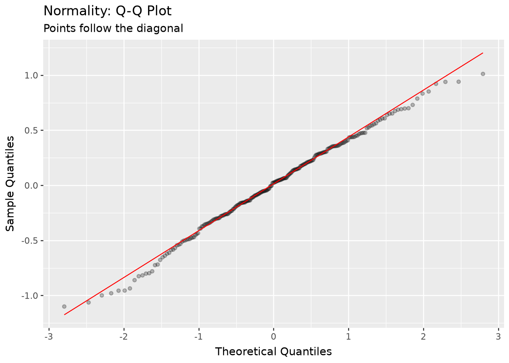
All the predictors show less than 10 VIF value, so our included predictors satisfy the multicollinearity assumptions. All the VIF values are much less than below 10, so we can safely assume that multicolinearity assumption has been satisfied.
MULTICOLINEARITY / IDENTIFIABILITY:
from statsmodels.stats.outliers_influence import variance_inflation_factorsnow_train.columnspredictors = ['snow_making','days_open_last','runs','avgsnow','region_Midwest','region_Mountain','region_Other','region_West',]X_train = snow_train.select(predictors)pl.DataFrame({'predictor': predictors,'VIF': [ variance_inflation_factor(X_train, i)for i inrange(X_train.shape[1]) ]}).sort('VIF', descending =True)
shape: (8, 2)
predictor
VIF
str
f64
"avgsnow"
3.085661
"region_Mountain"
2.235344
"runs"
1.928066
"days_open_last"
1.660274
"region_West"
1.467924
"snow_making"
1.343679
"region_Midwest"
1.268605
"region_Other"
1.017541
Feature Engineering
Snow_train data is split into train and test sets to avoid underfitting and overfitting for our model. Also the data is split between X and y to divide into predictors and outcome. Sentiment has been removed from predictors as it is the output. The following block does the data split part. The data is in 80/20 split.
# Specify the design matrix and outcomeX = snow_train.select(pl.exclude('sentiment'))y = snow_train.select('sentiment')# Split into training and testing setsX_train, X_test, y_train, y_test = train_test_split(X, y, test_size =0.2, random_state =42)
The snow train data is analyzed to see the count of sentiment values as well as count against each value to understand more about the sentiment data. 22 Different sentiment values are found in our dataset.
The sentiment is plotted for the bins to see whether sentiment is right skewed. As the graphs shows that the sentiment is centered around 4, we still take log of this data to interpret data in percentage terms.
The y train is defined with log of sentiment in this block with a new column log_sentiment and histogram plot of the log_sentiment is provided to see the data again. 1 is added to the formula as to avoid log(0) scenario. The original column with the name sentiment is dropped and the new column log_sentiment is used for y train.
#define y train with log_sentiment to transform sentiment values y_train = (y_train .with_columns( log_sentiment = (pl.col('sentiment') +1).log() ) .select('log_sentiment'))
As log_sentiment has been created, its important to see the logged data and distribution across bins. The log data can be observed to be in much closer bin sizes.
#plot the historgram for log_sentiment (ggplot(y_train, aes(x ='log_sentiment'))+ geom_histogram(bins =10))
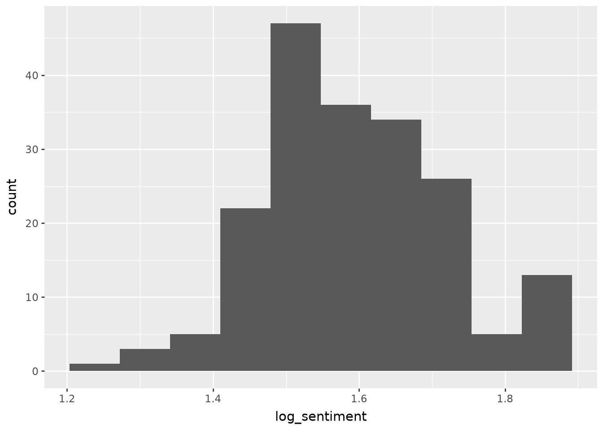
A constant is added for X train data and converted to pandas dataframe. The model is fitted with linear regression with y as outcome and x as predictors. The regression will run in this block and summary is presented below. All the coefficients and respective R squared values are calculated in this block.
The summary shows R-squared value of 0.995 and Adjusted RR-squared value of 0.995 as well. There is a small value of F-Statistic, so it shows predictors have some non zero co-efficients and predictors would relate to the outcome.
# Add constant for intercept X_train = sm.add_constant(X_train.to_pandas())fit_04 = sm.OLS(y_train.to_pandas(), X_train).fit()# Summarize the modelfit_04.summary()
C:\Users\abrar\AppData\Local\Temp\ipykernel_3320\3055341397.py:3: SingularMatrixWarning: The design matrix is rank-deficient. The model parameters are not uniquely determined.
OLS Regression Results
Dep. Variable:
log_sentiment
R-squared:
0.995
Model:
OLS
Adj. R-squared:
0.995
Method:
Least Squares
F-statistic:
3827.
Date:
Sat, 17 Oct 2026
Prob (F-statistic):
7.39e-205
Time:
11:10:14
Log-Likelihood:
645.50
No. Observations:
192
AIC:
-1269.
Df Residuals:
181
BIC:
-1233.
Df Model:
10
Covariance Type:
nonrobust
coef
std err
t
P>|t|
[0.025
0.975]
const
0.1325
0.001
229.832
0.000
0.131
0.134
observation
-2.249e-06
9.87e-06
-0.228
0.820
-2.17e-05
1.72e-05
snow_making
-2.878e-05
5.39e-06
-5.341
0.000
-3.94e-05
-1.81e-05
days_open_last
-0.0006
2.79e-05
-19.840
0.000
-0.001
-0.000
runs
-0.0012
1.95e-05
-61.671
0.000
-0.001
-0.001
avgsnow
-0.0001
8.87e-06
-16.650
0.000
-0.000
-0.000
region_Midwest
0.0198
0.002
12.553
0.000
0.017
0.023
region_Mountain
0.0018
0.002
0.834
0.405
-0.003
0.006
region_Other
-0.0529
0.006
-8.527
0.000
-0.065
-0.041
region_West
0.0237
0.004
5.884
0.000
0.016
0.032
residuals_01
0.2058
0.001
145.023
0.000
0.203
0.209
fitted_values_01
0.4072
0.001
462.755
0.000
0.405
0.409
Omnibus:
57.409
Durbin-Watson:
2.115
Prob(Omnibus):
0.000
Jarque-Bera (JB):
119.956
Skew:
-1.402
Prob(JB):
8.95e-27
Kurtosis:
5.671
Cond. No.
2.88e+18
Notes: [1] Standard Errors assume that the covariance matrix of the errors is correctly specified. [2] The smallest eigenvalue is 2.63e-30. This might indicate that there are strong multicollinearity problems or that the design matrix is singular.
We need to transform from the log scale to exponents. This block does this part. Briefly, the description of the Dataframe is:
Parameters: gives the name of each predictor
log_coef: the co efficient on the log scale
p_value : statistical significance of each predictor
The values are stored in the coef_table variable which gives parameters, log co efficient values and p value of each predictor. Another column called percent_change is added to get the exact percentage change values for each predictor. Since we got the log coefficients, p values and percentage changes on this data after verifying all assumptions, we can now run analysis for our original data set
Running analysis for complete dataset after verifying assumptions on our data
The snow predictors are selected for our model and the analysis is run on our complete dataset by comparing bayesian and frequentist models and selecting best model for our analysis. Snow_ols is from the original dataset and this variable name will be used for our analysis.
To start off, we keep only the outcome and predictors selected for our model.
In our case, sentiment is the outcome and predictors are: - snow making - days open last year - runs - and average snowfall
# Keep only the outcome and our four resort-attribute predictorssnow_ols = snow_data.select('sentiment', 'snow_making', 'days_open_last', 'runs', 'avgsnow')# see the data in this data frame snow_ols.head()
shape: (5, 5)
sentiment
snow_making
days_open_last
runs
avgsnow
f64
i64
i64
i64
i64
4.15
113
150
76
669
3.55
60
45
36
350
3.85
30
150
13
69
3.55
104
122
55
260
4.0
80
115
65
250
X and y values are defined for our model and the data is split into 80/20 ratio. The sentiment has been excluded from X as it is the outcome. X includes all the other pre defined predictors. Test and train data is in 80/20 split.
# Specify the outcomeX = snow_ols.select(pl.exclude('sentiment'))y = snow_ols.select('sentiment')# Split into training and testing setsX_train, X_test, y_train, y_test = train_test_split( X, y, test_size =0.2, random_state =42)
The snow making historgram shows that it is right skewed. Later, the log transformation would be applied for this predictor to avoid right skewed data.
The data for days open last year is checked, which seems to be ok
(ggplot(snow_ols, aes ( x ='days_open_last'))+ geom_histogram(bins=10))
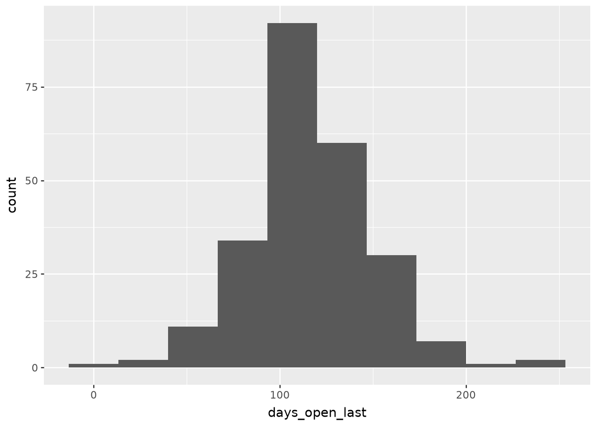
The data for runs is checked and it is also right skewed. Log transformation would be required for this data and log transformed values would be used in our model.
(ggplot(snow_ols, aes ( x ='runs'))+ geom_histogram(bins=10))
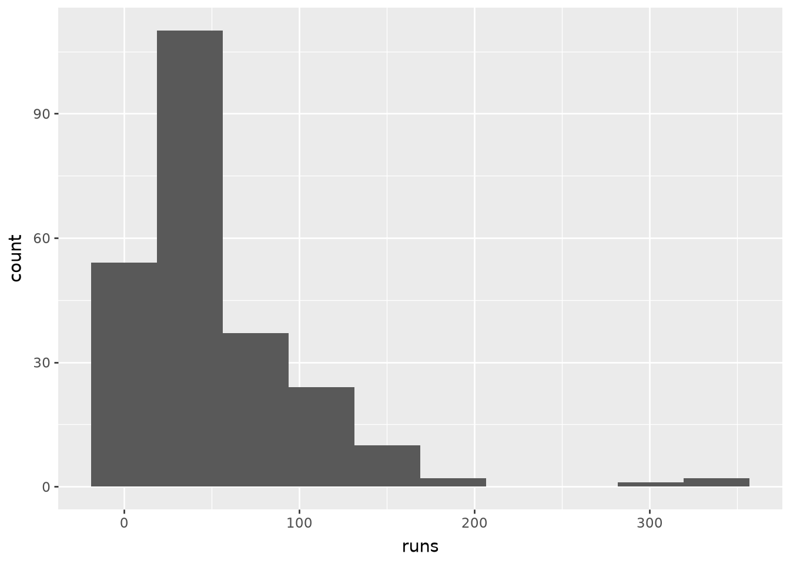
snow making and runs are log transformed into log_snow_making and log_runs to avoid right skewed data. X train is created with columns log_snow_making and log_runs. Similarly, X_test is created with log transformed predictors.
# create new list for coloumns to transform in X train and X test log_cols = ['snow_making', 'runs']# Snow Making & runs are heavily right-skewed, log transformed to normalize# create x train for the model X_train = (X_train .with_columns((pl.col(col) +1).log().alias(f'log_{col}') for col in log_cols) .select(pl.exclude('snow_making', 'runs')) .to_pandas())# create x test for the model and use same log transformations for x test as of x train X_test = (X_test .with_columns((pl.col(col) +1).log().alias(f'log_{col}') for col in log_cols) .select(pl.exclude('snow_making', 'runs')) .to_pandas())# see the value transformed for snow making and runs X_train.head()
days_open_last
avgsnow
log_snow_making
log_runs
0
154
130
5.129899
3.931826
1
97
110
5.459586
3.784190
2
135
156
6.175867
4.465908
3
116
40
4.795791
3.178054
4
155
314
5.963579
4.762174
Sentiment is log transformaed for interpretation in percentage terms
(ggplot(snow_ols, aes ( x ='sentiment'))+ geom_histogram(bins=10))
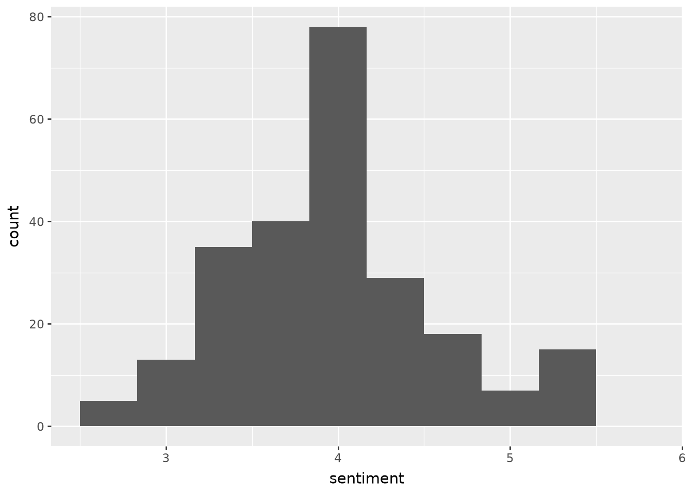
# create y train for the model y_train = (y_train .with_columns((pl.col('sentiment') +1).log().alias('log_sentiment')) .select(pl.exclude('sentiment')) .to_pandas())# create y test for the model y_test = (y_test .with_columns((pl.col('sentiment') +1).log().alias('log_sentiment')) .select(pl.exclude('sentiment')) .to_pandas())
We will start our analysis for the initial model.
The r squared value for the model is 0.444 and Adjusted R squared for the model is 0.432. F statistics has a small value so the predictors have some significance. We also get the co-efficients which we will use next.
Initial Model Fit without split
# Add constant for interceptX_train = sm.add_constant(X_train)# Fit the model, Ordinary least squares is for the model fit fit_05 = sm.OLS(y_train, X_train).fit()fit_05.summary()
OLS Regression Results
Dep. Variable:
log_sentiment
R-squared:
0.444
Model:
OLS
Adj. R-squared:
0.432
Method:
Least Squares
F-statistic:
37.33
Date:
Sat, 17 Oct 2026
Prob (F-statistic):
6.22e-23
Time:
11:10:15
Log-Likelihood:
187.41
No. Observations:
192
AIC:
-364.8
Df Residuals:
187
BIC:
-348.5
Df Model:
4
Covariance Type:
nonrobust
coef
std err
t
P>|t|
[0.025
0.975]
const
1.2212
0.039
31.704
0.000
1.145
1.297
days_open_last
0.0004
0.000
1.368
0.173
-0.000
0.001
avgsnow
0.0002
7.61e-05
1.977
0.049
3.61e-07
0.000
log_snow_making
0.0128
0.009
1.474
0.142
-0.004
0.030
log_runs
0.0656
0.015
4.507
0.000
0.037
0.094
Omnibus:
5.463
Durbin-Watson:
1.877
Prob(Omnibus):
0.065
Jarque-Bera (JB):
5.096
Skew:
-0.382
Prob(JB):
0.0782
Kurtosis:
3.232
Cond. No.
1.41e+03
Notes: [1] Standard Errors assume that the covariance matrix of the errors is correctly specified. [2] The condition number is large, 1.41e+03. This might indicate that there are strong multicollinearity or other numerical problems.
We define a dataframe so that we can see the predictors, their co-efficient and P values. Comapring the log snow making vs log runs co-efficients, we can see that log runs has more affect on the sentiment value.
P-value analysis: The smaller p value for log runs suggests that it is statistically significant. The average snow has a barely significant affect but it is real. Snow making is observed to have higher p value and is not significant. The p value of days open last year is high and the analysis suggests its not significant in this model. Overall, we can safely assume that number of runs does affect our sentiment output and will be tested out in different models later in the analysis.
# create a dataframe to store predictor estimates and p values pl.DataFrame({'term': fit_05.params.index.tolist(),'estimate': fit_05.params.values,'p_value': fit_05.pvalues.values}).filter(pl.col('term') !='const')
shape: (4, 3)
term
estimate
p_value
str
f64
f64
"days_open_last"
0.000379
0.17304
"avgsnow"
0.00015
0.049457
"log_snow_making"
0.012848
0.142204
"log_runs"
0.065564
0.000012
We now fit our Frequentist Model to the data set and test our model. Defined predictors are joined in the OLS model and results of the model are presented. R-Squared is 0.444 and adjusted R-squrared is at 0.432. F-Statistic is minute however it suggests the predictors are significant.
# Combine the outcome and predictors into one training framesnow_train_2 = pd.concat([y_train, X_train.drop(columns ='const')], axis =1)# define the predictors predictors = ['days_open_last', 'log_runs', 'avgsnow', 'log_snow_making']# fit to the OLS model fr_fit_01 = smf.ols('log_sentiment ~ '+' + '.join(predictors), data = snow_train_2).fit()# display the model results fr_fit_01.summary()
OLS Regression Results
Dep. Variable:
log_sentiment
R-squared:
0.444
Model:
OLS
Adj. R-squared:
0.432
Method:
Least Squares
F-statistic:
37.33
Date:
Sat, 17 Oct 2026
Prob (F-statistic):
6.22e-23
Time:
11:10:15
Log-Likelihood:
187.41
No. Observations:
192
AIC:
-364.8
Df Residuals:
187
BIC:
-348.5
Df Model:
4
Covariance Type:
nonrobust
coef
std err
t
P>|t|
[0.025
0.975]
Intercept
1.2212
0.039
31.704
0.000
1.145
1.297
days_open_last
0.0004
0.000
1.368
0.173
-0.000
0.001
log_runs
0.0656
0.015
4.507
0.000
0.037
0.094
avgsnow
0.0002
7.61e-05
1.977
0.049
3.61e-07
0.000
log_snow_making
0.0128
0.009
1.474
0.142
-0.004
0.030
Omnibus:
5.463
Durbin-Watson:
1.877
Prob(Omnibus):
0.065
Jarque-Bera (JB):
5.096
Skew:
-0.382
Prob(JB):
0.0782
Kurtosis:
3.232
Cond. No.
1.41e+03
Notes: [1] Standard Errors assume that the covariance matrix of the errors is correctly specified. [2] The condition number is large, 1.41e+03. This might indicate that there are strong multicollinearity or other numerical problems.
Bayesian Model is defined and fitted to our data with the predictors for the same dataset.
# Specify a Bayesian linear regressionba_model = bmb.Model('log_sentiment ~ '+' + '.join(predictors), data = snow_train_2)
Fitting the linear regression for our bayesian model.
# Fit a Bayesian linear regressionba_fit = ba_model.fit(cores =1) # used cores = 1 as the code got stuck on 4 cores
Initializing NUTS using jitter+adapt_diag...
Sequential sampling (2 chains in 1 job)
NUTS: [sigma, Intercept, days_open_last, log_runs, avgsnow, log_snow_making]
Sampling 2 chains for 1_000 tune and 1_000 draw iterations (2_000 + 2_000 draws total) took 4 seconds.
We recommend running at least 4 chains for robust computation of convergence diagnostics
Summarize the bayesian model output, the means values and upper and lower bound values for each of the predictors is defined. From this result, we can see that we get the upper bound and lower bound values for each of the predictors for 95% certainity. From the data observed we can see that:
Runs is above zero so it is satistically significant
Average snow is barely above zero so it is significant
Days Open Last Year: It is statistically insignificant as it involves 0
Snow making is not significant as it crosses 0
After analysis for Bayersian and frequentist models, it is evident that number of runs is the most important predictor to estimate sentiment value.
az.summary(ba_fit, ci_kind ='hdi', ci_prob =0.95)
mean
sd
hdi95_lb
hdi95_ub
ess_bulk
ess_tail
r_hat
mcse_mean
mcse_sd
sigma
0.0928
0.0047
0.084
0.1
2200
1446
1.00
0.0001
0.00011
Intercept
1.221
0.04
1.1
1.3
2582
1863
1.00
0.00078
0.00069
days_open_last
0.00038
0.00028
-0.00019
0.00092
2469
1599
1.00
5.7e-06
6.3e-06
log_runs
0.0655
0.015
0.035
0.093
2087
1569
1.00
0.00033
0.00034
avgsnow
0.00015
7.8e-05
-3.1e-06
0.0003
1881
1463
1.00
1.8e-06
1.6e-06
log_snow_making
0.0131
0.0089
-0.0054
0.029
2160
1483
1.00
0.00019
0.00021
Evaluate
Region was used in the analysis as there are different regions which host ski resorts and it is possible that the region has impact on the model accuracy. East region was taken as a base value , and in the model analysis two different datasets are tested, one without region included and one with region. An estimate is generated whether to use without region dataset or with region dataset. Model with region shows the following results:
Without Region Results: - R-Squared : 0.444 - Adjusted R-Squared: 0.432 - Without region MSE: 0.005488806440165671 - Without region RMSE: 0.07408647946937194
The number of runs is still the most significant factor. 1% increase in runs corresponds to 0.066% increase in sentiment for the sentiment scale ranging 1-7.
Model without region
# Model without region# Define the X and y X = snow_data.select(['snow_making','days_open_last','runs','avgsnow'])y = snow_data.select('sentiment')# Split the data between train and test X_train, X_test, y_train, y_test = train_test_split(X, y, test_size=0.2, random_state=42)# create new list for coloumns to transform in X train and X test log_cols = ['snow_making', 'runs']# create x train for the model X_train_log = (X_train .with_columns((pl.col(col) +1).log().alias(f'log_{col}') for col in log_cols) .select(pl.exclude('snow_making', 'runs')))# create x test for the model and use same log transformations for x test as of x train X_test_log = (X_test .with_columns((pl.col(col) +1).log().alias(f'log_{col}') for col in log_cols) .select(pl.exclude('snow_making', 'runs')))#define y test and y train with log transformed output y_train_log = y_train.with_columns((pl.col('sentiment') +1).log().alias('log_sentiment')).select('log_sentiment')y_test_log = y_test.with_columns((pl.col('sentiment') +1).log().alias('log_sentiment')).select('log_sentiment')# join the data for training train_0 = pl.concat([y_train_log, X_train_log], how='horizontal').to_pandas()#fit the model fit_0 = smf.ols('log_sentiment ~ log_snow_making + days_open_last+ log_runs + avgsnow', data=train_0).fit()#use the trained model to predict the outcome pred_0 = fit_0.predict(X_test_log.to_pandas())# show the mean squared error for the modelmse_0 = mean_squared_error(y_test_log.to_pandas(), pred_0)# show the root mean squared error for the modelrmse_0 = root_mean_squared_error(y_test_log.to_pandas(), pred_0)#print out summary results and error values print(fit_0.summary())print("Without region MSE:", mse_0)print("Without region RMSE:", rmse_0)
OLS Regression Results
==============================================================================
Dep. Variable: log_sentiment R-squared: 0.444
Model: OLS Adj. R-squared: 0.432
Method: Least Squares F-statistic: 37.33
Date: Sat, 17 Oct 2026 Prob (F-statistic): 6.22e-23
Time: 11:10:22 Log-Likelihood: 187.41
No. Observations: 192 AIC: -364.8
Df Residuals: 187 BIC: -348.5
Df Model: 4
Covariance Type: nonrobust
===================================================================================
coef std err t P>|t| [0.025 0.975]
-----------------------------------------------------------------------------------
Intercept 1.2212 0.039 31.704 0.000 1.145 1.297
log_snow_making 0.0128 0.009 1.474 0.142 -0.004 0.030
days_open_last 0.0004 0.000 1.368 0.173 -0.000 0.001
log_runs 0.0656 0.015 4.507 0.000 0.037 0.094
avgsnow 0.0002 7.61e-05 1.977 0.049 3.61e-07 0.000
==============================================================================
Omnibus: 5.463 Durbin-Watson: 1.877
Prob(Omnibus): 0.065 Jarque-Bera (JB): 5.096
Skew: -0.382 Prob(JB): 0.0782
Kurtosis: 3.232 Cond. No. 1.41e+03
==============================================================================
Notes:
[1] Standard Errors assume that the covariance matrix of the errors is correctly specified.
[2] The condition number is large, 1.41e+03. This might indicate that there are
strong multicollinearity or other numerical problems.
Without region MSE: 0.005488806440165671
Without region RMSE: 0.07408647946937194
C:\Users\abrar\AppData\Local\Temp\ipykernel_3320\2314794818.py:30: DeprecationWarning: the default behavior of `how='horizontal'` for `concat` is deprecated and will require equal heights in the next breaking release. Use `how='horizontal_extend'` to keep the current behavior.
(Deprecated in version 1.42.1)
Communicating the model result without region
The confidence intervals are communicated for the model. As observed, the most significant predictor is number of runs, followed by snow making, whereas days open last year has slight significance. Affect of Averege snow fall is almost near zero in this model.
The results are interpreted as:
Runs : The range is between 3.8% to 9.9 % with mean value at 6.8%. It means that 1% increase in runs increases 6.8% increase in sentiment. This is the most significant factor.
Snow Making: The interval is between 0.4% - 3% with mean at 1.3%. Each percentage increase in snow making results in 1.3% increase in sentiment.
Days Open Last Year: The interval is between 0.02% to 0.09% with mean at 0.04%. Each additional day open results in 0.04% sentiment increase.
Average snowfall: Interval is between 0% - 0.03% with mean at 0.02%. Each additional inch in snowfall results in 0.02% increase in sentiment.
The number of runs is the clear driver of sentiment, as 1% increase in runs accounts for 6.8% increas in sentiment. Snow making and days open show positive trends but are less significant. The resorts should prioritize on increasing the number of runs for their investments.
# Construct confidence interval data frame with percent changedf_01 = pl.DataFrame({'term': [t.replace('log_', '') for t in fit_0.conf_int().drop('Intercept').index.tolist()],'coef': [(np.exp(c) -1) *100for c in fit_0.params.drop('Intercept').tolist()],'conf_low': [(np.exp(c) -1) *100for c in fit_0.conf_int().drop('Intercept').iloc[:, 0].tolist()],'conf_high': [(np.exp(c) -1) *100for c in fit_0.conf_int().drop('Intercept').iloc[:, 1].tolist()]})# Plot the confidence intervals(ggplot(df_01, aes(x='coef', y='term'))+ geom_point()+ geom_errorbarh( aes(xmin='conf_low', xmax='conf_high'), height=0.2 )+ geom_vline( xintercept=0, color='red', linetype='--' )+ labs( title='Effect on Sentiment (% Change)', x='Percent Change', y='' ))
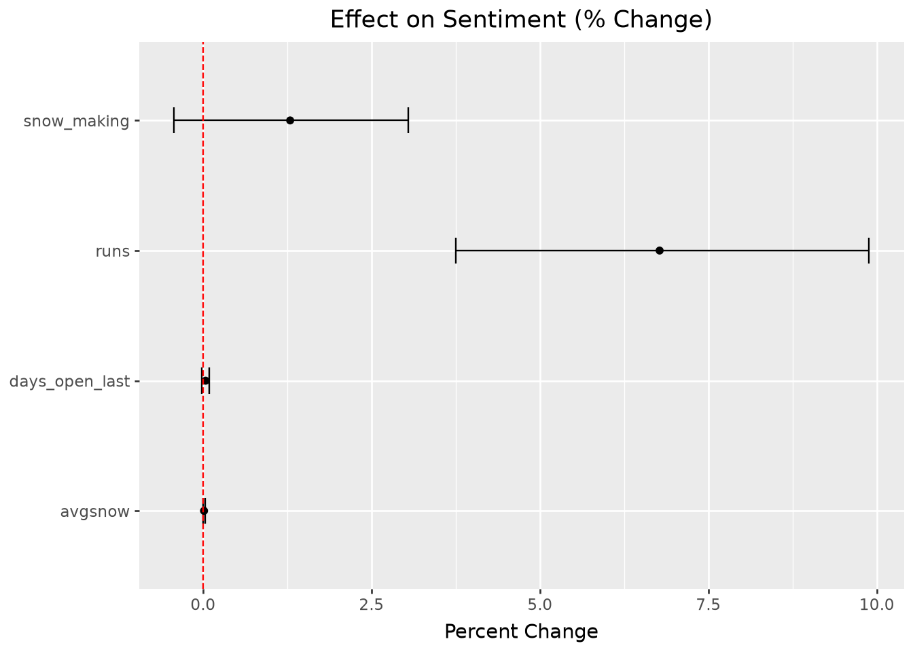
The other model with region is tested for the results.
Model with region
The dataset with model with region is analyzed for the results. Following are the results for the model: R - Squared : 0.451 Adjusted R - Squared : 0.427 F-statistic : small but it is indictive of predictors having significance Mean squared error : 0.005447742344244023 Root mean squared error : 0.07380882294308738
# Model with region# Drop the east region to use as reference snow_train_3 = (snow_data .to_dummies(columns=['region'], drop_first=False) .select(pl.exclude('region_East')))# define the predictors region_predictors = ['snow_making','days_open_last','runs','avgsnow','region_Midwest','region_Mountain','region_Other','region_West']#define the X and y X = snow_train_3.select(region_predictors)y = snow_train_3.select('sentiment')# split data into train and test with 80/20 splitX_train, X_test, y_train, y_test = train_test_split(X, y, test_size=0.2, random_state=42)# create new list for coloumns to transform in X train and X test log_cols = ['snow_making', 'runs']# create x train for the model X_train_log = (X_train .with_columns((pl.col(col) +1).log().alias(f'log_{col}') for col in log_cols) .select(pl.exclude('snow_making', 'runs')))# create x test for the model and use same log transformations for x test as of x train X_test_log = (X_test .with_columns((pl.col(col) +1).log().alias(f'log_{col}') for col in log_cols) .select(pl.exclude('snow_making', 'runs')))# create y train with log sentiment y_train_log = y_train.with_columns((pl.col('sentiment') +1).log().alias('log_sentiment')).select('log_sentiment')#create y test with log sentiment y_test_log = y_test.with_columns((pl.col('sentiment') +1).log().alias('log_sentiment')).select('log_sentiment')# concatenate the data with X and y train train_01 = pl.concat([y_train_log, X_train_log], how='horizontal').to_pandas()#define region_predictors with log values region_predictors_log = ['log_snow_making','days_open_last','log_runs','avgsnow','region_Midwest','region_Mountain','region_Other','region_West']# define and fit the model fit_01 = smf.ols('log_sentiment ~ '+' + '.join(region_predictors_log), data=train_01).fit()# run prediction for the model pred_01 = fit_01.predict(X_test_log.to_pandas())# calculate the mean squared error mse_01 = mean_squared_error(y_test_log.to_pandas(), pred_01)# calculate the root mean squared error rmse_01 = root_mean_squared_error(y_test_log.to_pandas(), pred_01)# print out model result summary print(fit_01.summary())#print out the mean error print("With region MSE:", mse_01)#print out the root mean error print("With region RMSE:", rmse_01)# residuals for existing diagnosticssnow_train = (pl.from_pandas(train_01) .with_columns(residuals_01 = pl.Series(fit_01.resid)) .with_columns(fitted_values_01 = pl.Series(fit_01.fittedvalues)) .with_row_index('observation'))
OLS Regression Results
==============================================================================
Dep. Variable: log_sentiment R-squared: 0.451
Model: OLS Adj. R-squared: 0.427
Method: Least Squares F-statistic: 18.77
Date: Sat, 17 Oct 2026 Prob (F-statistic): 2.02e-20
Time: 11:10:22 Log-Likelihood: 188.58
No. Observations: 192 AIC: -359.2
Df Residuals: 183 BIC: -329.8
Df Model: 8
Covariance Type: nonrobust
===================================================================================
coef std err t P>|t| [0.025 0.975]
-----------------------------------------------------------------------------------
Intercept 1.2299 0.043 28.790 0.000 1.146 1.314
log_snow_making 0.0130 0.009 1.424 0.156 -0.005 0.031
days_open_last 0.0003 0.000 1.249 0.213 -0.000 0.001
log_runs 0.0647 0.015 4.358 0.000 0.035 0.094
avgsnow 0.0001 0.000 1.375 0.171 -5.98e-05 0.000
region_Midwest -0.0112 0.017 -0.652 0.515 -0.045 0.023
region_Mountain 0.0051 0.023 0.226 0.821 -0.040 0.050
region_Other 0.0807 0.067 1.208 0.228 -0.051 0.213
region_West -0.0024 0.044 -0.054 0.957 -0.090 0.085
==============================================================================
Omnibus: 6.838 Durbin-Watson: 1.862
Prob(Omnibus): 0.033 Jarque-Bera (JB): 6.518
Skew: -0.414 Prob(JB): 0.0384
Kurtosis: 3.360 Cond. No. 2.40e+03
==============================================================================
Notes:
[1] Standard Errors assume that the covariance matrix of the errors is correctly specified.
[2] The condition number is large, 2.4e+03. This might indicate that there are
strong multicollinearity or other numerical problems.
With region MSE: 0.005447742344244023
With region RMSE: 0.07380882294308738
C:\Users\abrar\AppData\Local\Temp\ipykernel_3320\2800650603.py:43: DeprecationWarning: the default behavior of `how='horizontal'` for `concat` is deprecated and will require equal heights in the next breaking release. Use `how='horizontal_extend'` to keep the current behavior.
(Deprecated in version 1.42.1)
Interpretation of Results
The mean squarted error and root mean squared errors have less than 0.1% difference between with region and without region models. However, R sqaured adjusted decreased for with region to 0.427 as compared to without region which is at 0.432. Since without region model has higher adjusted R squared, that model is selected to run our analysis. R square increased by increasing the prediction region for with region model, but that is an expected result.
Model
R² Adj
MSE
RMSE
Without region
0.432
0.0055
0.0741
With region
0.427
0.0054
0.0738
The interval estimates are visualized for with region model and as observed in the chart, the runs is still the most significant predictor.
# Construct confidence interval data framedf_01 = pl.DataFrame({'term': fit_01.conf_int().index.tolist(),'coef': fit_01.params.tolist(),'conf_low': (fit_01 .conf_int().loc[:, 0].tolist()),'conf_high': (fit_01 .conf_int().loc[:, 1].tolist())}).filter(pl.col('term')!='Intercept')# Plot the confidence intervals(ggplot(df_01, aes(x ='coef', y ='term'))+ geom_point()+ geom_errorbarh( aes(xmin ='conf_low', xmax ='conf_high'), height =0.2 )+ geom_vline( xintercept =0, color ='red', linetype ='--' )+ labs(x ='', y =''))
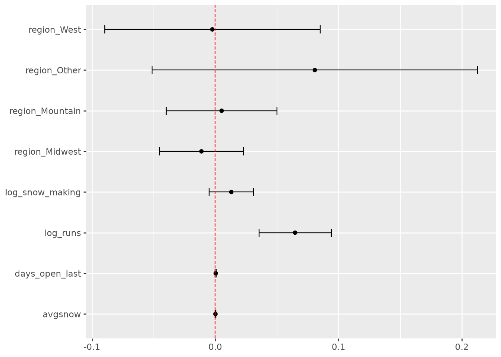
Predict
The model without region is finalized, and this code block is used to predict results for the model using complete dataset. Following are the results after the model fit.
R - Squared : 0.482 R - Squared Adjusted : 0.464 Prob(F-Statistic): The value is minute but above zero indicitive of predictors being significant.
The lower abd upper bounds for regions are not used in the analysis, however the regions are part of complete dataset, so they exist in the parameter columns.
Drop Region and run full model
#only select the relevant predictors and full_data = snow_data.select('sentiment', 'snow_making','days_open_last','runs','avgsnow')# define coloumns to have log transformations log_columns = ['snow_making', 'runs', 'sentiment']#define full data with log transformations and drop the original columns full_data = (full_data.with_columns((pl.col(column) +1).log().alias(f'log_{column}') for column in log_columns).select(pl.exclude('sentiment','snow_making', 'runs')).to_pandas())# define the predictorsregion_predictors_log2 = ['days_open_last', 'avgsnow', 'log_snow_making', 'log_runs']# model fit and print summary fr_fit = smf.ols('log_sentiment ~ '+' + '.join(region_predictors_log2), data=full_data).fit()#use the trained model to predict the outcome pred_0 = fr_fit.predict(full_data)# show the mean squared error for the modelmse_0 = mean_squared_error(full_data['log_sentiment'], pred_0)# show the root mean squared error for the modelrmse_0 = root_mean_squared_error(full_data['log_sentiment'], pred_0)#print out summary results and error values print(fr_fit.summary())print("Without region MSE:", mse_0)print("Without region RMSE:", rmse_0)fr_ci = fr_fit.conf_int().rename_axis('parameter').reset_index()fr_ci.columns = ['parameter', 'lower', 'upper'](pl.from_pandas(fr_ci) .with_columns([ ((np.exp(pl.col('lower')) -1) *100).alias('lower_percent'), ((np.exp(pl.col('upper')) -1) *100).alias('upper_percent'), ]))
OLS Regression Results
==============================================================================
Dep. Variable: log_sentiment R-squared: 0.475
Model: OLS Adj. R-squared: 0.466
Method: Least Squares F-statistic: 53.08
Date: Sat, 17 Oct 2026 Prob (F-statistic): 8.06e-32
Time: 11:10:23 Log-Likelihood: 243.27
No. Observations: 240 AIC: -476.5
Df Residuals: 235 BIC: -459.1
Df Model: 4
Covariance Type: nonrobust
===================================================================================
coef std err t P>|t| [0.025 0.975]
-----------------------------------------------------------------------------------
Intercept 1.2169 0.032 38.264 0.000 1.154 1.280
days_open_last 0.0005 0.000 2.109 0.036 3.25e-05 0.001
avgsnow 0.0001 6.4e-05 1.877 0.062 -5.95e-06 0.000
log_snow_making 0.0143 0.007 1.916 0.057 -0.000 0.029
log_runs 0.0639 0.012 5.164 0.000 0.039 0.088
==============================================================================
Omnibus: 9.771 Durbin-Watson: 1.737
Prob(Omnibus): 0.008 Jarque-Bera (JB): 9.778
Skew: -0.470 Prob(JB): 0.00753
Kurtosis: 3.308 Cond. No. 1.37e+03
==============================================================================
Notes:
[1] Standard Errors assume that the covariance matrix of the errors is correctly specified.
[2] The condition number is large, 1.37e+03. This might indicate that there are
strong multicollinearity or other numerical problems.
Without region MSE: 0.007711159326221119
Without region RMSE: 0.08781320701478292
shape: (5, 5)
parameter
lower
upper
lower_percent
upper_percent
str
f64
f64
f64
f64
"Intercept"
1.154291
1.279607
217.17749
259.522811
"days_open_last"
0.000032
0.000952
0.003248
0.095283
"avgsnow"
-0.000006
0.000246
-0.000595
0.024632
"log_snow_making"
-0.0004
0.028945
-0.040019
2.93682
"log_runs"
0.039496
0.088217
4.028589
9.222539
# make predictions with intervalsX_new = pl.DataFrame({'log_snow_making': [np.log(100), np.log(500), np.log(100), np.log(500)],# guage differences in snow making'days_open_last': [120, 120, 120, 120], # kept constant, as its something difficult for resorts to fully control'log_runs': [np.log(30), np.log(10), np.log(10), np.log(30)], # to guage the effect on runs, and if resorts should build more'avgsnow': [200, 200, 200, 200] })X_new = X_new.with_columns(log_pred = pl.Series(fr_fit.predict(X_new.to_pandas())))X_new = X_new.with_columns(pred_sentiment = (np.exp(pl.col('log_pred')) -1))X_new#Confidence and prediction intervals print(fr_fit.get_prediction(X_new).summary_frame(alpha=0.05))
ba_model = bmb.Model('log_sentiment ~ '+' + '.join(region_predictors_log2), data=full_data)priors_dict = {'Intercept': bmb.Prior('Uniform', lower=-100, upper=100),**{t: bmb.Prior('Uniform', lower=-100, upper=100) for t in region_predictors},'sigma': bmb.Prior('Exponential', lam=1)}ba_model.set_priors(priors=priors_dict)ba_fit = ba_model.fit(cores=1) # used single core not to hang on windows az.summary(ba_fit, ci_kind='hdi', ci_prob=0.95)ba_model.predict(ba_fit, kind='response')ppc_array = az.extract(ba_fit, group='posterior_predictive', var_names='log_sentiment', num_samples=100).to_numpy()ppc_data = pl.DataFrame({'log_sentiment': ppc_array.flatten(order='F'),'draw': np.repeat(np.arange(ppc_array.shape[1]), ppc_array.shape[0]),})(ggplot()+ geom_density(ppc_data, aes(x='log_sentiment', group='draw'), color='red', alpha=0.1)+ geom_density(pl.from_pandas(full_data), aes(x='log_sentiment'))+ labs(title='Predicted vs. Real Outcomes', subtitle='Investigate structural differences'))
d:\CoursesUSU\Final_Semester\Intro_Reg_ML\DATA5600\data-5600\Project1\Data-5600-Project-1\.venv\Lib\site-packages\bambi\models.py:528: UserWarning: Unused name(s) in `priors`: ['region_Midwest', 'region_Mountain', 'region_Other', 'region_West', 'runs', 'snow_making']. They will be ignored. Set `bmb.config["UNUSED_PRIORS"]` to change this.
Initializing NUTS using jitter+adapt_diag...
Sequential sampling (2 chains in 1 job)
NUTS: [sigma, Intercept, days_open_last, avgsnow, log_snow_making, log_runs]
d:\CoursesUSU\Final_Semester\Intro_Reg_ML\DATA5600\data-5600\Project1\Data-5600-Project-1\.venv\Lib\site-packages\p
ymc\step_methods\hmc\quadpotential.py:321: RuntimeWarning: overflow encountered in dot
Sampling 2 chains for 1_000 tune and 1_000 draw iterations (2_000 + 2_000 draws total) took 9 seconds.
We recommend running at least 4 chains for robust computation of convergence diagnostics
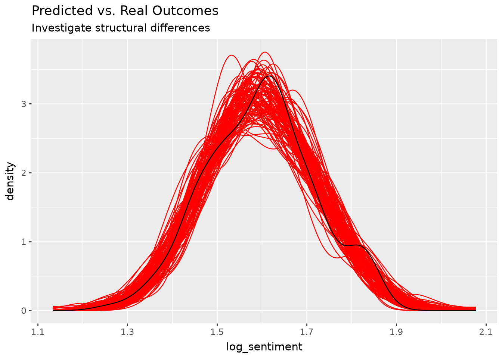
Interpretation of Predicted vs Real Outcomes
The predicted outcomes following the data, which means that the model is well trained and can give accurate predictions. The model without region is well suited to run predictions.
Conclusion
Although the dataset is from 2019, OnTheSnow dataset provides a good basis for our analysis for 300+ US ski resorts. Weather patterns have changed, and due to less snow each year, ski resorts have to come up with ways to improve their customer expereince. Sentiment provides a good outcome metric to measure and is provided using data mining techniques in another project and matched against US ski resorts. The predictors selected were runs, snowfall, snow making and days open last year. Runs is the most significant predictor. Geographical regions did not impact on the model and model without regions was selected as it was more accurate. After predicting, it is observed that the model fits the actual values well and can be used to predict using other data.
Way Forward
The number of runs is the most important factor found in the predictors for predicting the outcome sentiment. Dataet contains more predictors like run categories, run lengths, their difficulty and their height data. The way forwrad is to focus on the runs and their corresponding predictors to identify which runs are the most significant to increase sentiment value.